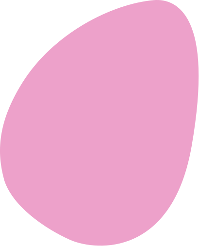
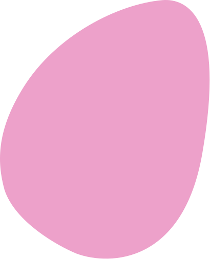

Hi! I'm Sam.
I'm a Rhode Island based graphic designer and 3D generalist passionate about creating visual experiences that connect and inspire.
My work spans logo design, branding, packaging design, 3D visualization, and motion graphics. Whether I'm crafting a brand identity from the ground up or breathing new life into existing concepts, I approach each project with fresh eyes and thoughtful attention to detail.
When I’m not behind a screen, you’ll find me exploring the outdoors, drawing inspiration from the world around me to bring it into my creative process.
My Toolkit


Let's Work Together
I'm currently available for any opportunities, including freelance projects, and graduating in 2026. If you're looking for a designer who combines technical expertise with creative problem-solving and strong interpersonal communication, I'd love to hear about your project.
CONTACT ME
 
